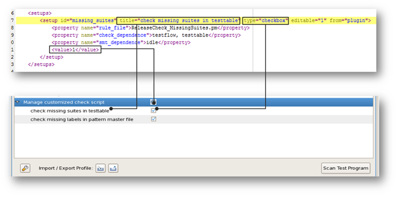
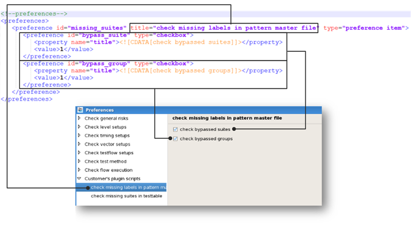

XML file
XML file is the configuration file which defines the custom check items and their properties.
The XML file consists of two elements:
- The
<setups> element: Defines the items displayed in the
release checker list. It can contain multiple <setup> elements, each for
one check item.For each <setup> element, the following attributes must be defined:
- id: Unique ID for each custom check item.
- title: The name of the custom check item displayed in TP360.
- type: The value must always be checkbox.
- <property name="rule_file">: The name of the rule file (Perl module file) containing the code for performing the check. For more information on the Perl module file, see Perl module file.
- <property name="check_dependence">: The types of setup files to be parsed. The value can be pin, level, timing, testtable, testflow, vector, mcdlog. You can specify multiple types, separated by commas.
- <property name="smt_dependence">: The SmarTest status to execute this check item. The value must be one of online, offline, idle.
- <value>: The default status of the checkbox. If 1 is specified, the check box is selected by default. If 0 is specified, the check box is deselected.
Here is an example of the setups in the XML file and the corresponding display in the release checker interface:

- The
<preferences> element: Defines how check items are
displayed in the Preferences window.
For each check item, the following attributes must be defined:
- id: Unique ID for each custom check item. It must match the ID for the check item specified in the <setups> element.
- title: The name of the custom check item displayed in the Preferences window. It should match that defined in the <setups> element.
- type: The value must be preference_item.
Within the <preference> element of a check item, add subitems of preferences and define their properties with the following attributes:- id: Unique ID for the parameter.
- type: The value should be one of textbox, checkbox, label, spinner, listbox, file-selector, dir-selector, and separator.
- property:
The properties should be defined in accord with the designated type as shown in the
following
template:
<preference id="" title="" type="preference_item"> <preference id="" type="textbox"> <property name="title"></property> <value>Default Name</value> </preference> <preference id="" type="checkbox"> <property name="title"></property> <value>0/1</value> </preference> <preference id="" type="label"> <property name="title"></property> </preference> <preference id="" type="spinner"> <property name="title"></property> <property name="max">99</property> <property name="min">0</property> </preference> <preference id="" type="listbox"> <property name="title"></property> <property name="option">option1</property> <property name="option">option2</property> </preference> <preference id="" type="file-selector"> <property name="title"></property> </preference> <preference id="" type="dir-selector"> <property name="title"></property> </preference> <preference id="" type="separator" /> </preference>The text of the property must be written in the following format:<property name="name"><![CDATA[text]]></property>
Here is an example of the preferences in the XML file and the corresponding display in the Preferences window:

Example
Sample XML file
<tp360 type="plugin" xmlns:xsi="http://www.w3.org/2000/10/XMLSchema-instance" xsi:noNamespaceSchemaLocation="NewReleaseChecker.xsd">
<setups>
<setup id="check_input_suite_no_swbin" title="Check specified test suites for missing software bins" type="checkbox" editable="1">
<property name="rule_file">ReleaseChecker_CheckInputSuiteWithoutSWBins.pm</property>
<property name="check_dependence">testprogram,dutboard,testflow,testtable</property>
<property name="smt_dependence">idle</property>
<value>1</value>
</setup>
<setup id="check_all_suite_no_sw_bin" title="Check missing software bin in test table" type="checkbox" editable="1">
<property name="rule_file">ReleaseCheck_ListAllSuiteWithoutSWBins.pm</property>
<property name="check_dependence">testprogram,dutboard,testflow,testtable</property>
<property name="smt_dependence">idle</property>
<value>1</value>
</setup>
<setup id="list_all_error_warning_message" title="Check warning and error messages" type="checkbox" editable="1">
<property name="rule_file">ReleaseChecker_ListAllWarningErrorMessage.pm</property>
<property name="check_dependence">testprogram,dutboard,testflow,testtable,uireport</property>
<property name="smt_dependence">idle</property>
<value>1</value>
</setup>
</setups>
<preferences>
<preference id="check_input_suite_no_swbin" title="Check missing software bin definition for specified test suites" type="preference_item">
<preference id="input_suite_no_swbin" type="textbox">
<property name="title"><![CDATA[Test suites to be checked: ]]></property>
<property name="toolTips"><![CDATA[Input suite names separated by commas. (You can use wildcard characters like this: **.testflow.suite, **.testflow.*, **.testsuite)]]></property>
<value></value>
</preference>
</preference>
</preferences>
</tp360>
Functional changes
- Introduced in SmarTest 7.4.3